Deep Sky Notes — April 2026
Wiruna Wanderings
------------------------------------------------------------------------------------------------------------------
April 2026 – By Alessandro Spina
------------------------------------------------------------------------------------------------------------------
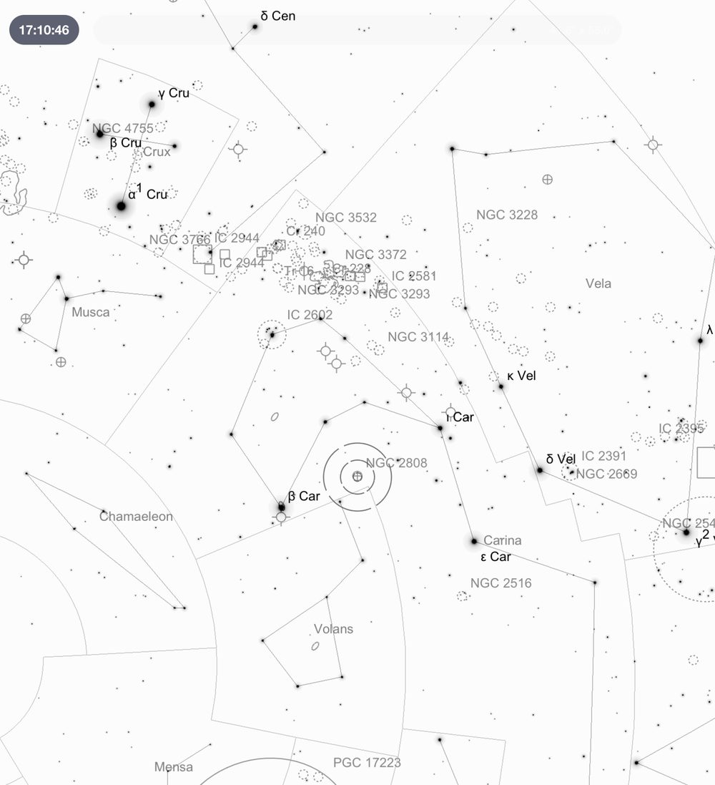
The April Wiruna weekend was a fantastic weekend. The weather forecast for the week leading up to New Moon was for clear skies. I took advantage of this and headed up on Thursday to try to sneak three nights of observing in. I set up my SkyWatcher dob alongside the Club’s 17.5-inch dob. As the sun set conditions seemed ideal, mild temperature, no cloud, and little wind.
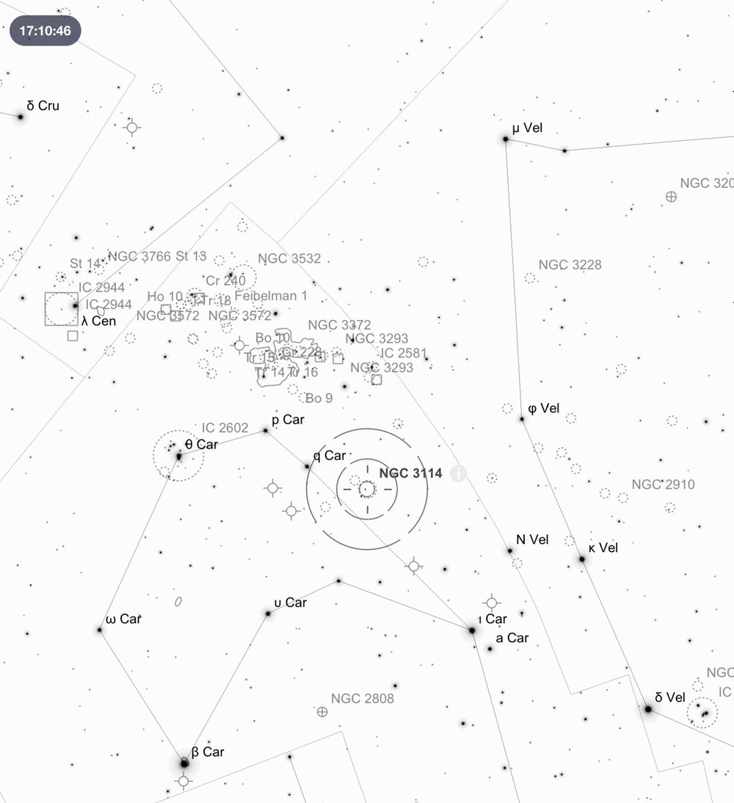
I decided that night would be a tour of Carina (the Keel of the mythical Argo Navis). First on the list was the 6th magnitude globular cluster NGC 2808. It is one of the Milky Way’s most massive globulars (~1 million stars) and notably hosts five distinct stellar populations — a clue that some globulars are accreted dwarf-galaxy cores. To find it, use the Telrad to point the scope along the line between -Carinae and -Carinae. As you pan the scope along that line, you’ll pick the bright haze of the globular easily. Starting with a 16mm (94× magnification, 0.87° TFOV), NGC 2808 is on the cusp of being fully resolved. With a 9mm (167× magnification, 0.49° TFOV) the resolved stars come into focus (something that was much tougher to do in my 10-inch). Averted vision (AV) really helped to bring out more of the fainter stars in the halo. On one side, three chains of stars (perhaps foreground stars) extend out like “spiral arms” from the core. Next was NGC 3114, a 4th magnitude open cluster. To find this cluster, use the naked-eye visible IC 2602 (the “Southern Pleiades”) as a jumping off point. Then draw a line through p-Carinae and q-Carinae, a further ~4° north sits NGC 3114. This cluster requires a large field of view (FOV), so I immediately switched to the 35mm (43× magnification, 1.6° TFOV). Southern Gems by Stephen O’Meara (page 163) refers to the stars as forming the shape of a “radio telescope”. At first, I was sceptical as I struggled to pick out any shape in the eyepiece. The rich starfield makes it tricky to know where the cluster starts and ends. However, looking through the finderscope (with its ~5° FOV) makes the “radio telescope” shape abundantly clear. A triangle of bright stars formed the “base”, and semi-circular pattern of stars formed the “dish”. A bright yellowish star sits within the “dish”. I endorse the renaming of NGC 3114 as “The Radio Dish” cluster.
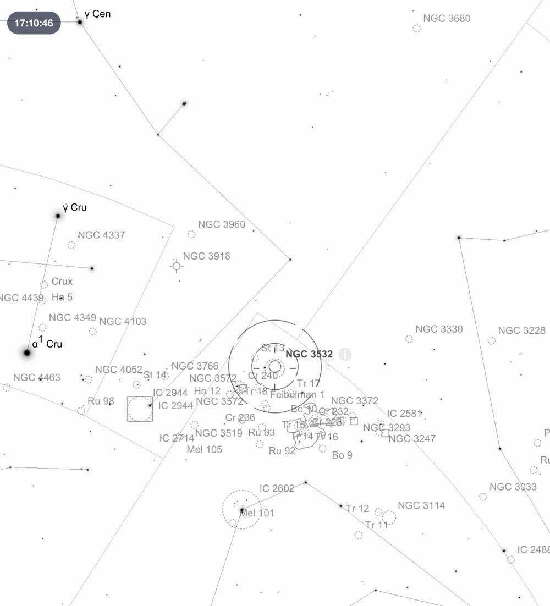
The next object, NGC 3199 was also inspired by Southern Gems (page 170). It does not appear in my Cambridge Star Atlas; hence I had never noted this object before. This nebula is associated with a Wolf-Rayet star — WR 18, an exceptionally hot and luminous massive star whose extreme stellar winds have stripped away its outer hydrogen layers. NGC 3199, also known as the Banana Nebula, is a wind-blown bubble: a shell of stellar-wind gas sweeping up and ionizing the surrounding interstellar medium. Its impressive crescent shape was long attributed to a bow shock, though more recent work suggests the asymmetry reflects a denser pocket of the interstellar medium. To find this I again started with IC 2602, then looked north to find the trio of p–Carinae, q –Carinae and s–Carinae which form a triangle. ~2° to the north-west of s-Carinae lays NGC 3199. Even at low magnification, a thick band of curved nebulosity, ~ 7’ x 3’, stands out. Jumping up to the 9mm and adding a UHC filter, improves the contrast significantly. With averted vision, I could sense the curve of the nebula continued arcing down further. At the time I was not completely certain this was the correct object, as this part of Carina is rich in nebulas. I got my confirmation on the Saturday night looking through the Club’s newly delivered 22-inch dob, but more on that later. This was a fun object to hunt down and learn about.
From there I jumped over to NGC 3532. This naked-eye cluster is easy to spot to the east of Eta Carina (see Figure 3). With my widest eyepiece, 35mm I could not capture the entirety of this cluster which is some 55’ across. Only the finderscope allowed me to really get a sense of the size of this cluster. The longer I looked the more I began to also pick up several yellow-orange stars. A bright yellow-orange star marks the FOV to the right. I also noticed what appeared to be a dark band of a dust cloud or starless space that bisects the middle of the cluster.
From there I drifted across to Eta Carinae, where I found NGC 3293 (“The Gem Cluster”) sitting ~2° to the north-west. It is easy to pick up this cluster in the finderscope (see Figure 3). It is a young cluster, only ~10-12 million years old, and sits on the edge of the greater Eta Carina complex. In the eyepiece it is a compact cluster, with a dense collection of ~40 stars tightly packed into a space 5’ across. An orange-red coloured star jumps out immediately, with some indications of yellow members too, making it reminiscent of the nearby Jewel Box. In the 16mm I could also pick up a band of nebulosity to the right (NGC 3324 perhaps), making for an interesting field. As I studied the colours of the cluster, a passenger plane pass directly through the FOV, something different from the usual Starlink satellites.
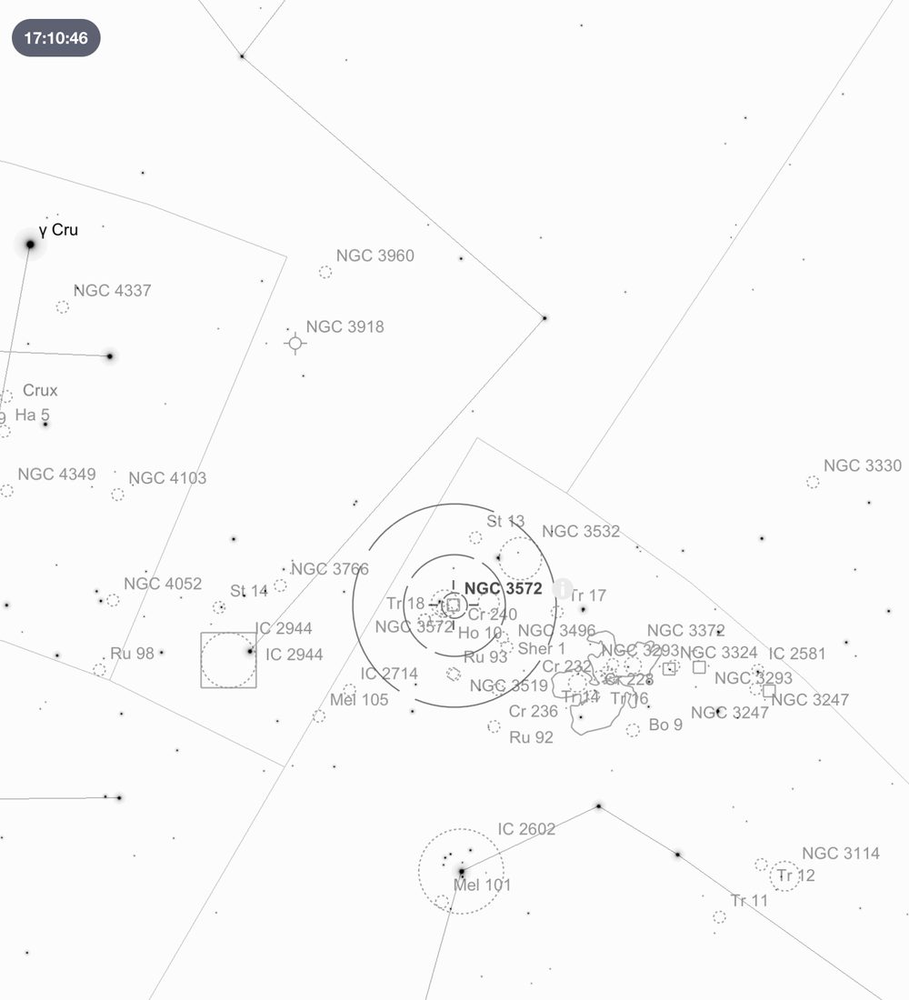
I then followed the chain of open clusters that populate this corner of Carina. If you keep NGC 3532 in the finder, but drift south ~ 2° you will notice a bright clump of stars that stands out in the finderscope. This marks the pair of open clusters, NGC 3572 and NGC 3590. In the eyepiece of the 35mm, this made an interesting field of view with the two clusters separated by another mass of stars, giving the appearance of overlapping open clusters. It's not clear at all where each cluster starts and the other ends. I also noticed two bright patches of nebulosity in the same FOV which I later realised must have been NGC 3576/3603. An even wider field eyepiece would be particularly useful in this rich region of the sky.
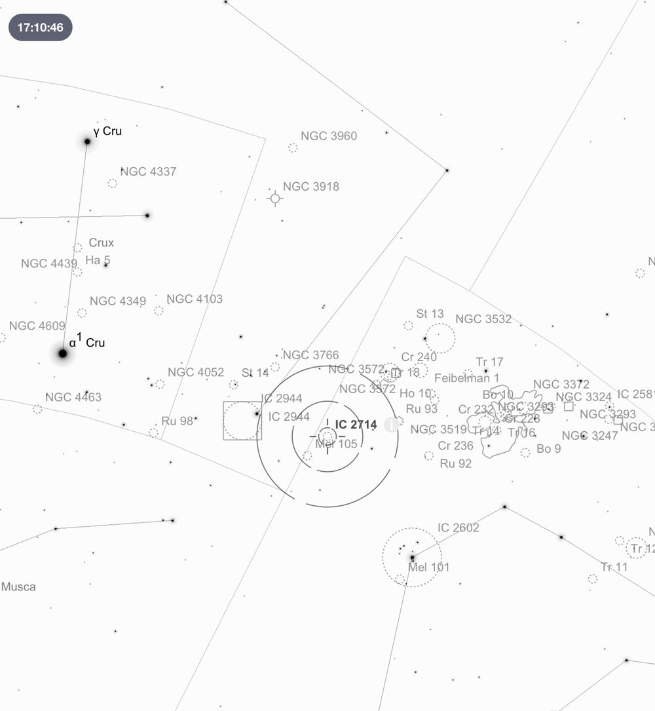
Next in the chain of open clusters was IC 2714 and Mel 105. This pair also made it onto my observing list courtesy of Southern Gems (page 197 and 198). Start by drawing a line between IC 2602 and -Centauri, pan about halfway along that line to pick out the unresolved hazy mass of IC 2714 (See Figure 5). With the 35mm you can fit both clusters in the same field, and they make for a lovely contrast. IC 2714 is a large relatively dense collection of 60+ stars in a circular disk 15’ across. Mel 105 on the other hand is packed into an area 5’ across. A few of the brighter members of Mel 105 are easily resolved, but the rest require higher magnification to bring them into focus. A lovely contrast to squeeze both in the same field.
IC 2602, also known as the “Southern Pleiades”, sits nearby so I panned the telescope over to have a look. Again, this is a cluster that rewards a wide field of view. However, what caught my attention was a fainter but denser, open cluster lurking in its shadow, Mel 101 (see Figure 5). This cluster is a nice collection of 30-40 stars that form a clear “figure-8” shape to my eye. Mel 101 lives 6,800 light-years away, ~14× more distant than IC 2602 which is ~486 light-years, so they're an unrelated line-of-sight pairing, not physically associated. A nice discovery near a cluster I typically skip over in the telescope.
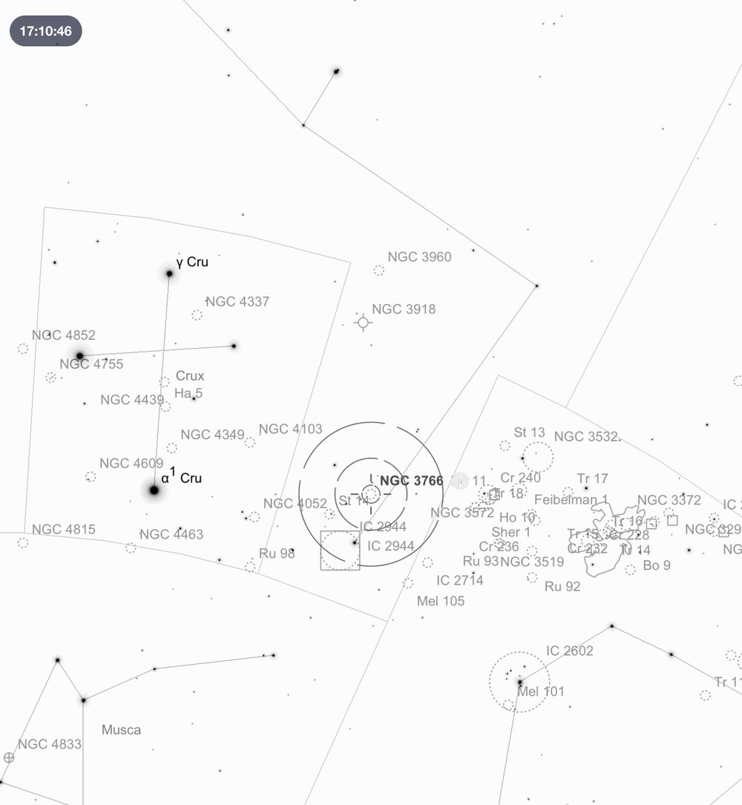
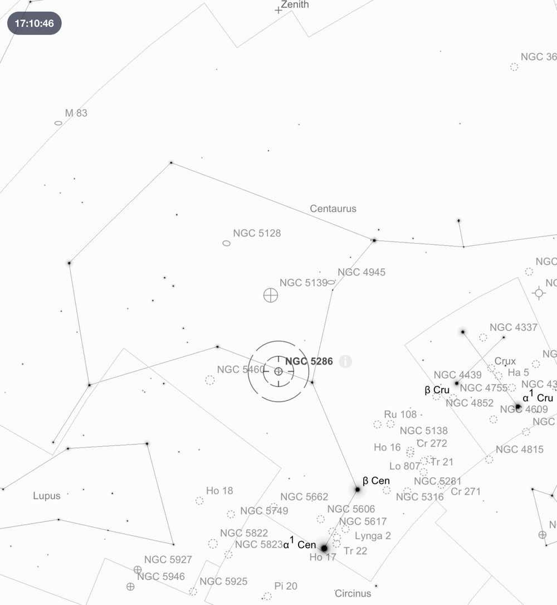
Having finished my tour of Carina, I wandered over into Centaurus to look for NGC 3766. This cluster is also a young cluster in the Centaurus OB1 association, known for having a large collection of massive Be-type stars. To find it, draw a line in between -Crucis (Acrux) and IC 2602, -Centauri is the brightest star along that line. Starting from -Centauri, I spotted a chain of 5 bright stars in the finderscope that lead directly to the cluster. In the eyepiece the cluster is framed nicely with a triangle of bright stars to the left, and two bright stars to the right. The cluster itself is a dense collection of dozens of stars in a 15’ area, that stands out even in the rich starfield. Immediately two orange-yellow stars caught my attention in the centre. This explains the name given to the cluster, “Pearl Cluster” Furthermore, two chains of stars run down the cluster creating a “path” through the core. All up this makes for a beautiful view and worth coming back to.
Last object of note that night was NGC 5286, a globular cluster in Centaurus and potentially one of the oldest globulars in the galaxy at ~12.5 billion years. Overshadowed by its more illustrious neighbour (Omega Centauri) means the globular doesn’t get as much attention. It’s easy to spot, by finding the line between -Centauri and -Centauri (both naked eye stars), the cluster sits one-thirdrd of the way along that line. I could just about pick it out in the finderscope as a small faint haze. With the 35mm eyepiece in, it wasn’t much except a uniform haze of unresolved stars. The 16mm began to give it some texture, but the 9mm gave the best view by far with more of the halo of stars resolved. I noted it had an irregular shape which made it interesting. I made a note to come back to this object with a larger telescope to see what extra aperture would have to offer.
Overall, Thursday night had little wind, almost no dew and relatively mild temperatures all night, making it a comfortable night of observing. Seeing conditions were ok, but the following two night would prove to be even better.
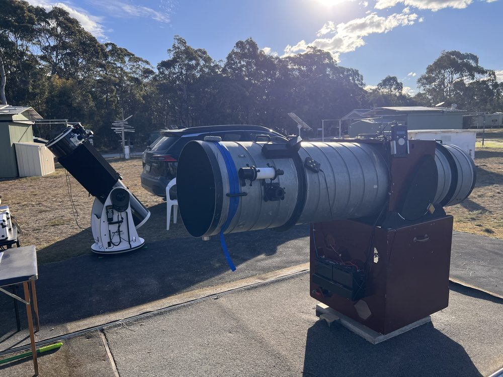
Friday, I awoke to a clear blue sky. Yet more members arrived on site to take advantage of the conditions. Throughout the day the wind picked up with 30–40 km/h gusts. I decided in these conditions it would be ideal to get the Club’s 17.5-inch out. If any telescope doesn’t care about a little wind, it’s this tank (see Figure 8). The night started promising, with clear sky and better seeing conditions than the day before. By around 9pm some low cloud from the west started to roll in. Playing tag with sucker holes was no fun, so I eventually retreated to the campfire in the kitchen. But not for long, soon enough someone remarked that the sky had cleared and the kitchen emptied out again.
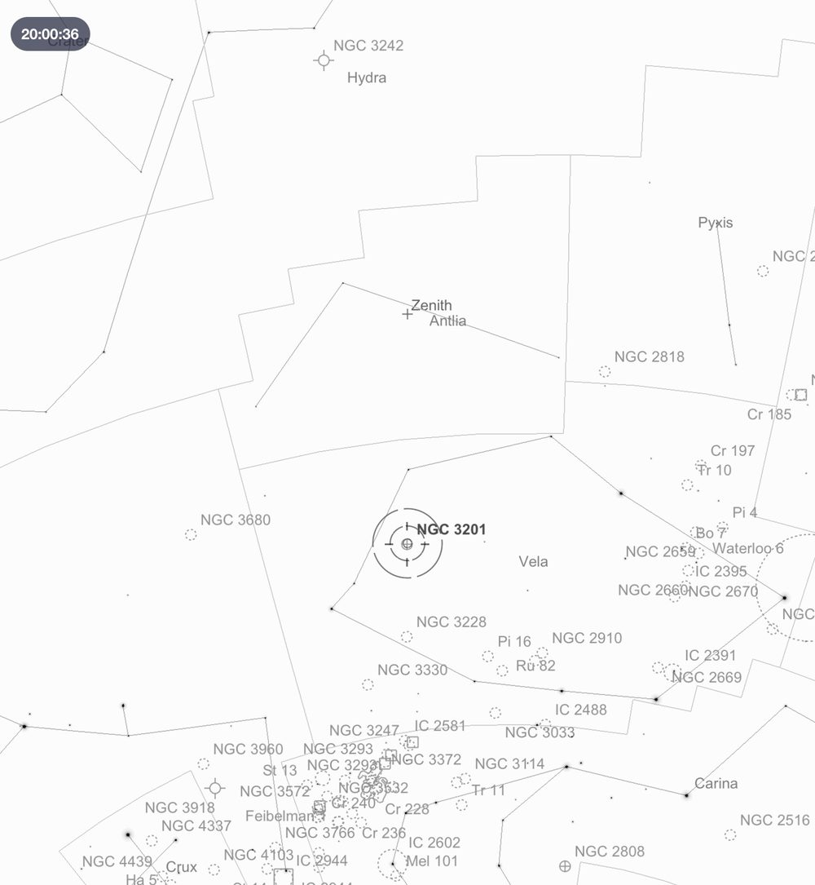
I started my observing run in the constellation of Vela (the sail of Argo Navis). I started with the globular NGC 3201 (see Figure 10). Interestingly, NGC 3201 has an extreme retrograde orbit and a high heliocentric radial velocity, suggesting it is the relic of a destroyed dwarf galaxy that the Milky Way swallowed. Furthermore, it also likely holds a collection of black holes. To identify it, -Velorum and -Velorum are conveniently placed and point towards the cluster. You’ll have to push the telescope a further 6–8° west of ρ-Velorum. As you pan the telescope across this line you will pick up the glowing halo in the finderscope easily. This cluster is easily resolved in the 17.5-inch scope. Upping the magnification reveals beautiful details in the chains and loops of stars that dominate this cluster. I think what makes this globular unique is the relatively less condensed core and irregular edges, almost like a dense open cluster. At 9.6’ it is not as large as 47 Tuc or Omega Centauri, but it does have a unique character to it.
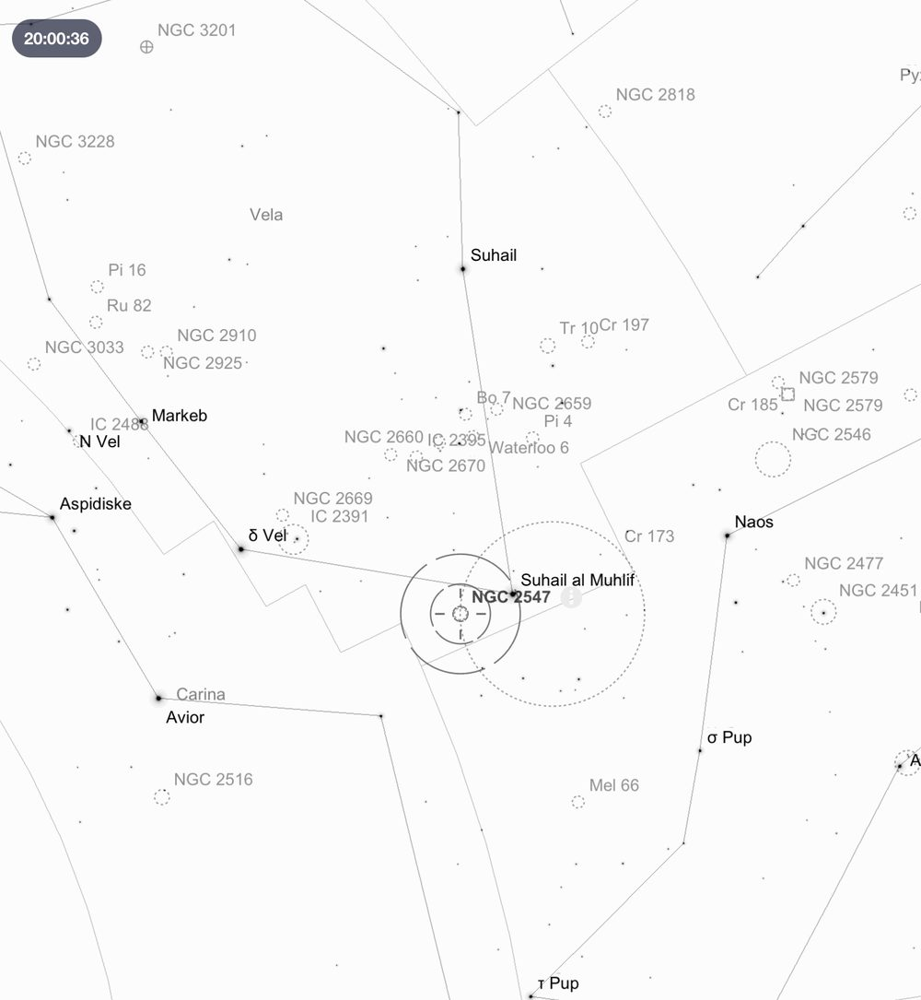
Swinging over to the other side of Vela, use the “False Cross” as your starting point to find IC 2391 which is easy to pick up with the naked-eye just above -Velorum (see Figure 10). This cluster needs a low power eyepiece to capture all its members. I picked out 4 brighter stars in a Trapezium shape in the centre of the cluster, with trio of stars tucked inside with one member having a distinct yellow colour. Next was the open cluster NGC 2547. Start from the “False Cross” will give you -Velorum and -Velorum. Following this around to -Velorum (see Figure 10). -Velorum itself is interesting. It is a quadruple star system with its companion easily identified at 41 arc-seconds apart. The brighter component is itself a spectroscopic binary containing a blue supergiant and a Wolf-Rayet (WR) star — the closest WR star to Earth. Two bright stars beneath point to the double star pair, completing the view. Using -Velorum as a marker in the finderscope, drift south ~1° and you’ll pick up a bright knot of stars which marks the cluster. NGC 2547 is a large cluster, 25’ wide, but is relatively sparse. To my eye two overlapping oval chains of stars forming the bulk of the cluster. Continuing on, draw a line from -Velorum to -Velorum and halfway along this line you will find NGC 2659 (see Figure 10). In the eyepiece this cluster formed a neat triangle with two other stars. All members of this cluster are fainter, giving it an overall lower surface brightness. But its irregular shape, and density are enough to pick it out from the field of view.
The next intended target on my list was planetary nebula, NGC 3132. Despite being certain I had the right stars in the finderscope to match the chart; I came up empty handed and could not spot it. Sometimes you just have to give up (and come back with a bigger telescope the next night).
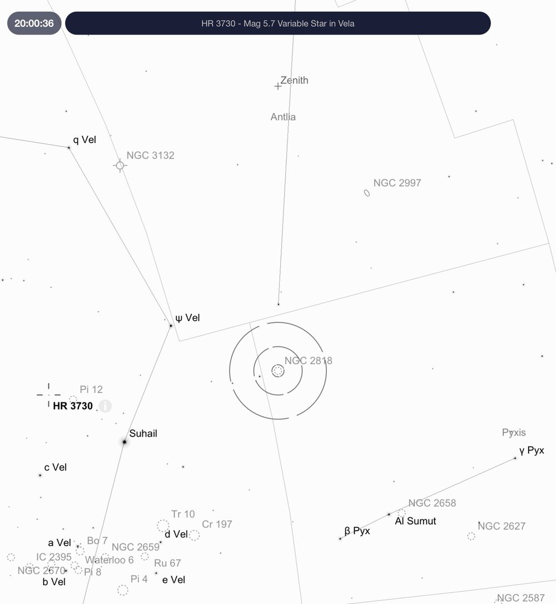
I then hopped over to Pyxis to hunt down another recommendation from Southern Gems (page 154), the planetary nebula NGC 2818. Pyxis itself is not a bright constellation, tucked in between Puppis and Vela. I could just make out the ‘L-shape’ combination of , , and - Pyxidis. Starting from γ-Velorum, cast your eyes north-west to -Velorum, from there is a chain of 3 stars just visible to the naked eye which will guide you towards the planetary (see Figure 11). The intriguing thing about this planetary is it sits within an open cluster, like M46 in Puppis (though recent Gaia work suggests NGC 2818 may be physically associated with its host cluster). The cluster itself is designated Mel 96. At approximately 8th magnitude, this is not a bright cluster, but it is rich enough to easily distinguish in the FOV. The cluster spans an area of 8’. In the middle of the cluster floats the grey, slightly elongated disk of NGC 2818. With averted vision, I get the sense the top-right/bottom-left taper off into a fainter extension of the disk. While in Pyxis I also decided to hunt down NGC 2658, made easy by its proximity to -Pyxidis (see Figure 11).
By this time in the night Scorpius and Sagittarius were rising to the east. I spent the remainder of the night visiting some old favourites such as the Lagoon, Trifid Nebula and M55 with the benefit of the larger aperture.
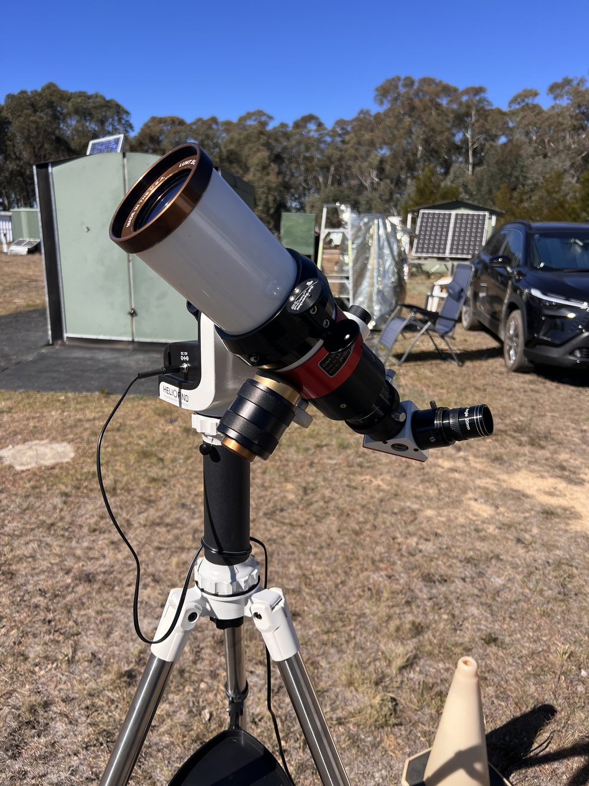
Saturday brought additional members on site. Mark Notary set up the Club’s solar scope (Figure 12). The Lunt solar scope uses a Hα filter to isolate the hydrogen-α emission line, giving the sun’s disk a deep orange-red colour. When I first looked through the solar scope at 10am several large prominences, caused by magnetic fields warping and twisting the sun’s surface, could be seen dangling off the sun’s disk to the bottom right. The top of the sun was also marked with several prominences that appeared to arc up and back onto the sun’s surface. A collection of sunspots tracked above the sun’s equator. As I wandered around doing things during day, I would occasionally check back on the solar scope and was amazed to see just how much movement there was as the prominences and sunspots tracked across the sun’s disk. Well worth having a look through if you ever spot this solar scope out on the field.
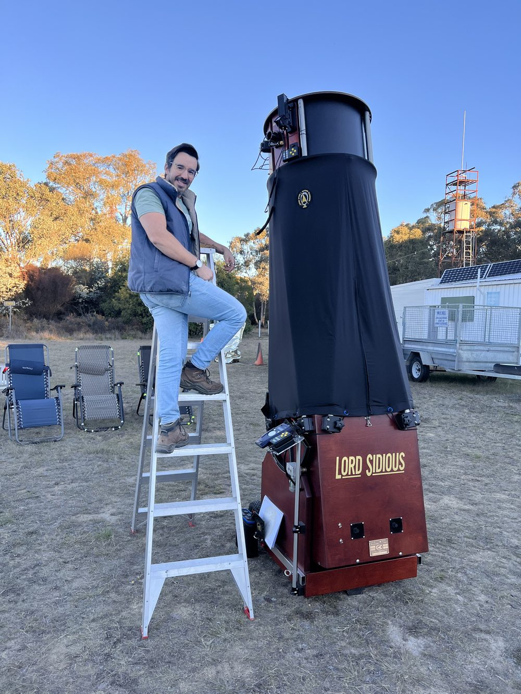
Saturday evening brought ideal conditions. The wind had died down and there was no sign of any cloud. It would turn out to have the best seeing conditions of the three nights. So as sunset approached it was time to roll out the Club’s new 22-inch Dob, Lord Sidious. Setting up this scope was straightforward. A quick two-star alignment was all that was needed to get the ArgoNavis and ServoCAT running. First object was M42 which was sinking towards the western horizon. Satisfied with our alignment, we moved onto the first real test, the Horsehead Nebula. This was something I had never seen visually, so I was keen to test out Lord Sidious. I centred the telescope on NGC 2023, a reflection nebula just below the Horsehead (Barnard 33). Pushing Alnitak out of the FOV helped to reduce the glare from the bright star. With a 31mm eyepiece (90× magnification, 0.91° TFOV) and no filter in, I could immediately make out a dully illuminated nebula that stretched across the FOV with a distinctive curved silhouette sitting in the middle. Upping the magnification a little and blinking with the UHC filter helped bring out the shape even more. A chain of stars sitting above the nebula helped to increase our confidence that this was indeed B33. An exciting start to the night.
With a group of visitors and members (some old and new) hanging around the scope, we started on a Star Party style greatest-hits tour of the sky including, Eta Carinae, Tarantula Nebula, Omega Centauri, M65/M66 in Leo, M83, M4 and NGC 6231. One of the highlights of the night for me was Eta Carina. With a low-power eyepiece it always makes for a beautiful vista. Adding a UHC filter dialled up the contrast, making the view even more impressive. One of the many great features of Lord Sidious is its sliding rack that sits within the optical tube assembly which allows you to have 3 filters in place (we had a UHC, OIII and H-Beta) and simply push the slider up or down to change the filter. No unscrewing filters with cold hands and going up and down the ladder. The real magical views came with some higher magnification. Bumping up the power and focusing on Eta itself, revealed the bulbous Homunculus Nebula — the bipolar shell expelled during Eta Carinae’s Great Eruption in 1843. The shape and the dark lines that mark the expanding bubble were clear and well resolved. I was instantly reminded of one of my favourite Wiruna memories from many years ago — sitting around Mike Kerr's then-new 25-inch Obsession, waiting for my turn at the eyepiece. With Pink Floyd playing in the distance, a younger me was called to the eyepiece for my first ever look at the Homunculus. 20 years later I was transported back to that moment.
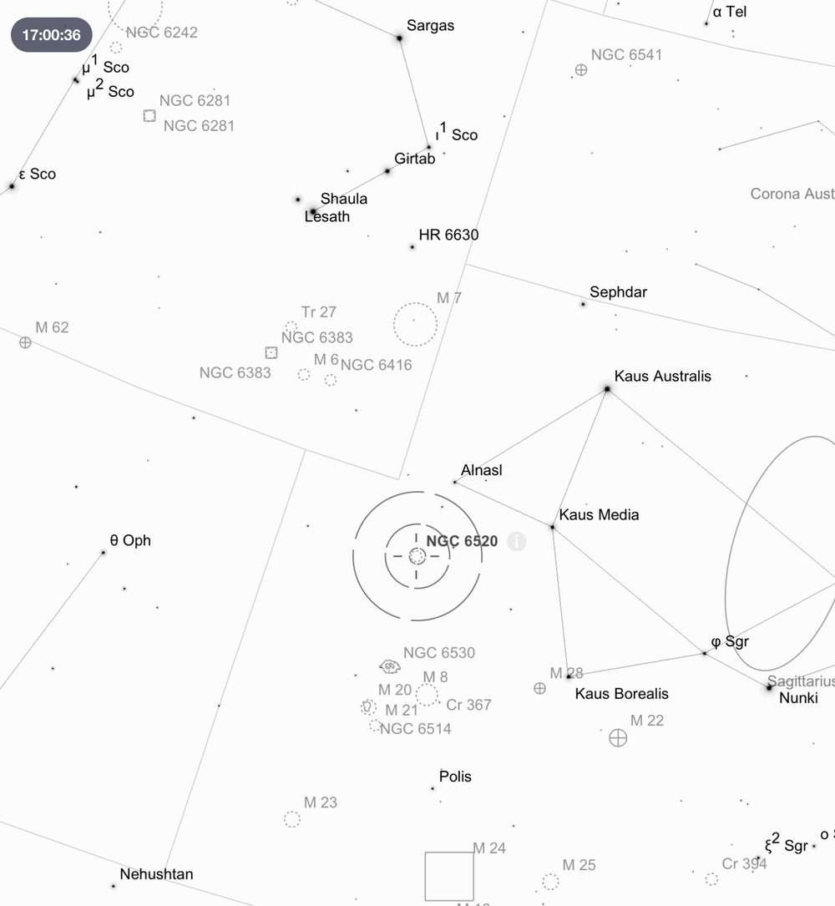
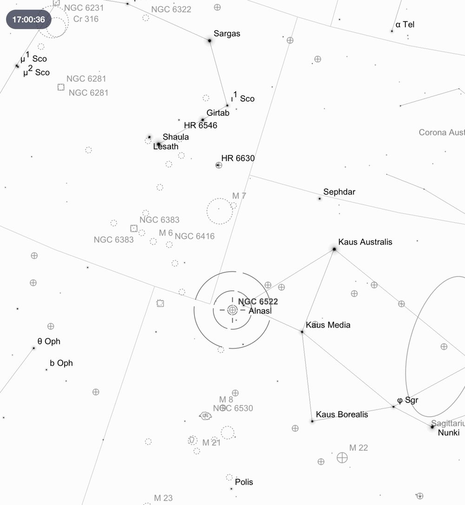
Michael, a fellow visual observer visiting from Canberra, suggested NGC 6520, the “Deadman’s Cluster” (See Figure 14). I was not familiar with this open cluster in Sagittarius, so we swung down to the eastern sky where Sagittarius had cleared the trees. We were not disappointed. The cluster itself is rich and compact, with a tight circle of stars surrounding an inner bright star. Beneath that sits a dark nebula Barnard 86 ("Ink Spot"). The field is also marked by a bright orange star next to B86. Together this makes for a beautiful view with contrasting colours and darkness. Michael also suggested a nearby pair of globulars, NGC 6528 and NGC 6522 which sits in patch of sky referred to as Baade's Window. As I learned Baade's Window is an area of the with relatively low amounts of . This area is considered an observational "window" to the of our galaxy. With a low-powered eyepiece in, you can comfortably fit both globulars in the same FOV.
As the crowd thinned out, I seized the opportunity to confirm some objects from my previous night’s observing. First up, I punched NGC 3199 into the Argo Navis control panel to confirm if this was the object I had found on Thursday night. To my delight, it was indeed. Although much brighter and with more intricate detail in the nebula itself. With the extra aperture, I could also see now that the arc did extend further down. I also punched in NGC 3132, the planetary in Vela that had eluded me the previous night. Given its brightness, it’s shocking that I couldn’t find this the night before. This is a beautiful planetary nebula with its soft bluish-grey tinge and 10th magnitude central star immediately apparent. The central star is itself a binary, with its companion providing the energy to illuminate the planetary. NGC 3132 is variously called the "Eight-Burst Nebula" or "Southern Ring Nebula", for its eight petal-like extensions and ring shape.
Sunday morning arrived and it was time to pack up and drive home unfortunately. With 3 nights of observing, through 3 different telescopes it was a marvellous weekend. Until next month. Clear skies.